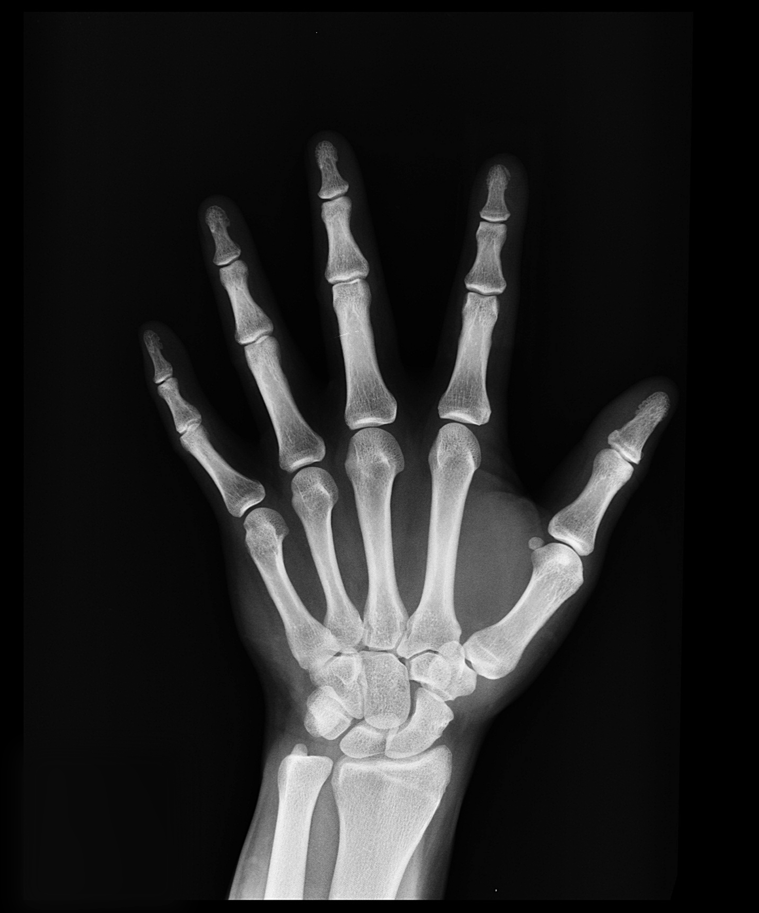

Learn Enough to Be Dangerous is a leader in the movement to teach technical sophistication, the seemingly magical ability to take command of your computer and get it to do your bidding. This includes everything from command lines and coding to guessing keyboard shortcuts, Googling error messages, and knowing when to just reboot the darn thing. We believe there are at least a billion people who can benefit from learning technical sophistication, probably more. To join our movement, sign up for our official email list now.
sign up for our official email listBill Gates is an American entrepreneur and software developer who co-founded Microsoft in 1975, revolutionizing personal computing with the Windows operating system. Beyond tech, he became one of the world’s most influential philanthropists through the Bill & Melinda Gates Foundation, focusing on global health, education, and poverty.

Learn Enough to Be Dangerous is an outgrowth of the Ruby on rails Turtorial HyperText MarkupLanguage, the uniersal language of the World Wide Web. Other related tutorials can be found at learnenough.com
You should follow uss on Twitter hereAt least a billion people can benefit from technical sophistication.
Hello, world!HTML was created by the original "web developer", computer scientist Tim Berners-Lee. It's not true that Sir Tim invented HTML in order to share pictures of his cat, but it would be cool if it were.
You should follow Bones on Twitter 